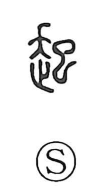

起

Uncategorized
Kun: okiru, okoru, okosu, tatsu | On: ki
to rise ・ to get up ・ to occur ・ to cause ・ to start ・ to raise
Explanation
In its earliest form, 起 combines 走, which conveys running or going, with 巳, the figure of a serpent used as the phonetic. The image evokes a snake moving forward with its head lifted, and this poised, upward motion naturally came to suggest the moment a person rises to begin an action. From that vivid scene the character develops meanings such as to stand or get up, to wake, to set something in motion, to make or establish, and to raise.